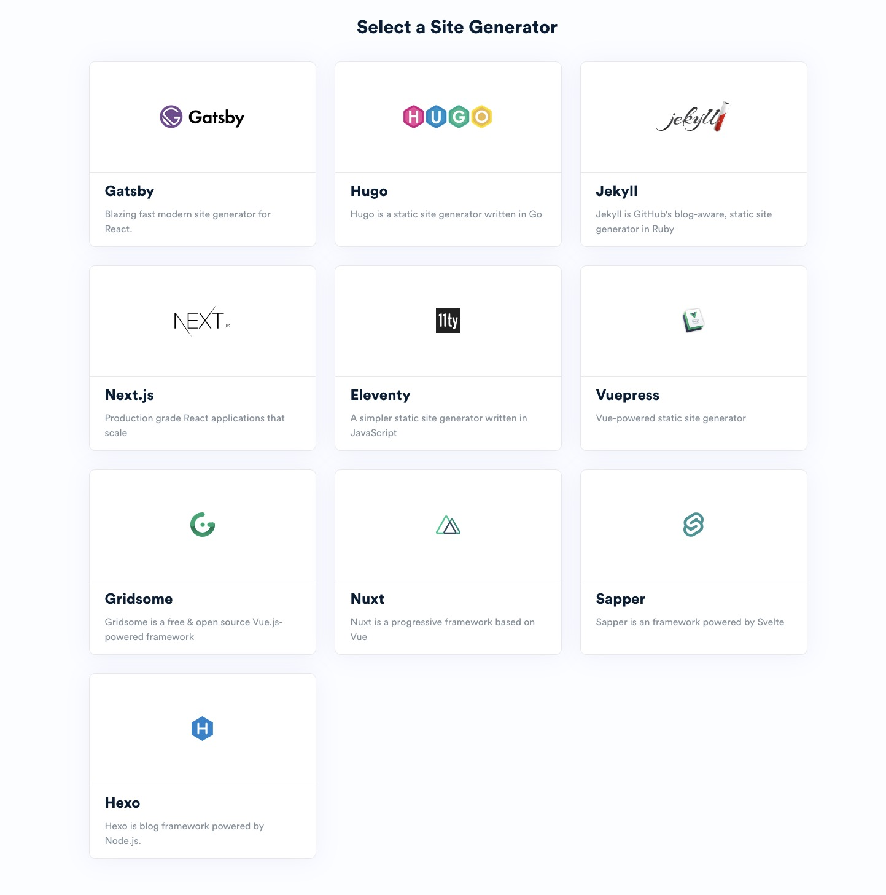

Notes on building a blog with 11ty and the use of the Jamstack architecture
25/12/21
My desire to make a blog using 11ty was to learn about technologies like Node.js, npm, and others used to create a site with more functionality.
The first thing I did was start getting to know the different static site generators or, in short, SSGs. As with almost anything web-related, there are tens of them and choosing something suitable for me was kind of difficult.
While searching, I came across a site that I, unfortunately, forgot, where I saw this photo with the most popular SSGs:
And I realised something: "The different SSGs use different languages...".
The choice among all them came down to the fact that I want to work as much as possible with one language, namely JavaScript. This excluded a lot of technologies, and I finally hesitated between Gatsby and Eleventy. After a brief search for information about both, I was left with the impression that Gatsby is more complicated because I would have to work with React and GraphQL. It took me a while to decide because Gatsby has excellent blog themes, and that's one of the main reasons I chose to use a static site generator and learn what it is to use Node.js, NPM and other tools. Finally, I decided on Eleventy because it is described as a simple static site generator using JavaScript. I looked at the blog themes posted on their site and decided on nine to choose from.
- 11r
- Eleventy stylus blog theme
- Neat Starter
- Midnight
- Rocket11ty
- Jace-ty
- Packt11ty
- Blog theme
- Eleventy Duo
I decided to take into account how each of the themes looks first on my monitor, which currently has a resolution of 3000 by 2000, and then on a smartphone like an iPhone 6/7/8. A particular feature that I wanted was a button to toggle between dark and light mode. It is great to have this option, and it is useful in different situations to have each of these two modes. To some extent, this may or may not limit me in terms of choosing colours.
I decided to try the Eleventy stylus blog theme:
https://eleventy-stylus-blog-theme.vercel.app/Also, one of the reasons are the score that the theme has on the 11ty website.
Source code: https://github.com/ar363/eleventy-stylus-blog-theme
I often came across the word Jamstack when searching for an SSG and a blog theme. It turns out that this is maybe the most important thing that I need to understand while working 11ty. The JAM in JAMstack comes from JavaScript, APIs, and markup and is not a particular stack but an architecture not bound to specific technologies. JavaScript is present in the name because it is the most used programming language for web development, but programming languages like Python, Ruby, Go, and others can also be used. A book that I read on the subject is "Modern Web Development on the JAMstack" by Mathias Biilmann and Phil Hawksworth, and I am still about to understand more about it.
Now the hard part is actually doing it..